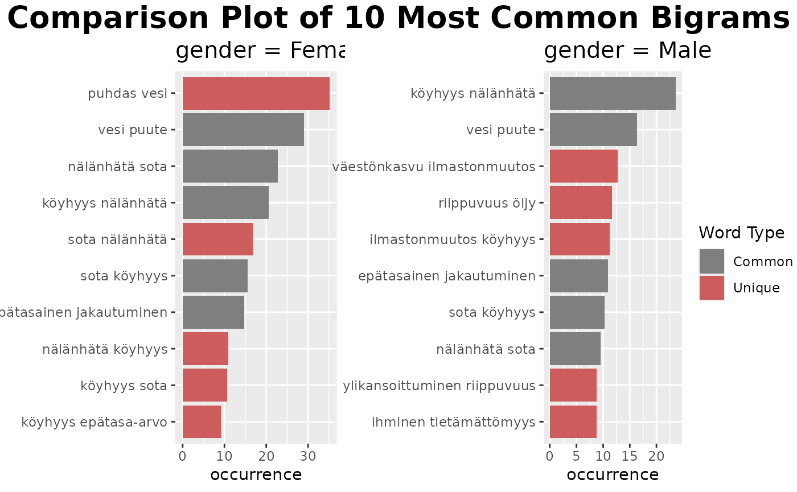
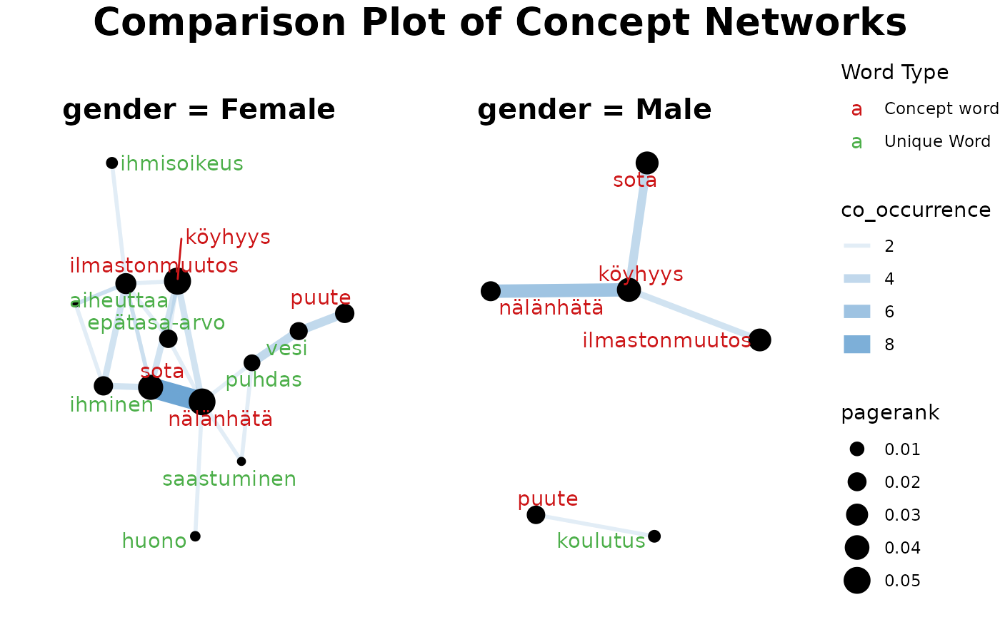

PackageTutorial
Overview-PackageTutorial.RmdOverview of finnsurveytext
This tutorial aims to provide a simple overview of what is included
within the finnsurveytext package and teach you how to use
the main functions included in the package.
The below table shows you all the functions that are included in the package. The functions which are bolded are the main functions which are outlined in the sections below.
| Section | Usage | Functions |
|---|---|---|
| 1. Data Preparation | use the udpipe R package to clean and
annotate the raw data into a standardised format (CoNLL-U) suitable for
analysis. |
fst_format() fst_find_stopwords() fst_rm_stop_punct() fst_prepare() fst_prepare_svydesign() |
| 2. Data Exploration | create wordclouds, n-gram tables and summary tables for initial insights into trends across responses. | fst_summarise_short() fst_summarise() fst_pos() fst_length_summary() fst_use_svydesign() fst_freq_table fst_ngrams_table() fst_ngrams_table2() fst_freq_plot() fst_ngrams_plot() fst_freq() fst_ngrams() fst_wordcloud() |
| 3. Concept Network | creation of a concept network using the textrank
R package with node size indicating word importance
(PageRank) and edge weight showing co-occurrence of words. |
fst_cn_search() fst_cn_edges() fst_cn_nodes() fst_cn_plot() fst_concept_network() |
| 4. Comparison Functions | corresponding Data Exploration and Concept Network functions allowing for comparison between groups of survey respondents. |
fst_pos_compare() fst_summarise_compare() fst_length_compare() fst_get_unique_ngrams_separate() fst_get_unique_ngrams() fst_join_unique() fst_ngrams_compare_plot() fst_freq_compare() fst_ngrams_compare() fst_comparison_cloud() fst_cn_get_unique_separate() fst_cn_get_unique() fst_cn_compare_plot() fst_concept_network_compare() |
0. Install and Load Package
First, the finnsurveytext package needs to be installed
into your R environment and loaded into the environment.
## Loading required package: grid## Loading required package: Matrix## Loading required package: survival##
## Attaching package: 'survey'## The following object is masked from 'package:graphics':
##
## dotchart1. Data Preparation
The data preparation functions are used to take your raw survey data (in a dataframe or svydesign object within your R environment) and convert it into a standardised format ready for analysis.
The functions in the remaining sections require your data to be pre-formatted into this format.
(To learn move about the format we use, see the Universal Dependencies Project.)
Option 1: Data is in a dataframe
The package comes with sample data. For this demonstration, we use
dev_coop. The raw data looks like this:
| fsd_id | q11_1 | q11_2 | q11_3 | paino | region | gender | year_of_birth | education_level |
|---|---|---|---|---|---|---|---|---|
| 1 | elämiseen tarvittavat perusasiat ovat kehittymättöneet (esim. vesi, talo, ruoka). Ja niitä ei ole riittävästi | varmaan koitetaan kehittää em | saastuminen ja luonnonvarojen liikakäyttö, nälänhätä ja ylikansoittuminen | 0.5440 | Muu Etelä-Suomi | Female | 1992 | NA |
| 2 | on kurjuutta ja nälänhätää, asiat eivät ole vielä kehittyneet, lapset eivät pääse kouluun, tytöillä on huonompi asema kuin pojilla. | pyritään auttamaan? | ihmiskauppa, nälänhätä ja sodat/turvattomuus | 0.7171 | Pohjois- ja Itä-Suomi | Female | 1994 | Matriculation examination |
| 3 | jokaisella ei ole turvattua toimeentuloa ja jossa todella huomaa koulutuksen arvon. | autetaan ja näytetään ihmisille tie parempaan tulevaisuuteen heidän oman työnsä tuloksena. | kouluttamattomuus, nälkä ja puhtaan veden puute. | 0.6240 | Helsinki-Uusima | Female | 1994 | Matriculation examination |
| 4 | kehityksen taso ei ole yhtä korkea kuin kehittyneissä maissa | yleensä haitataan kehitysmaan kehittymistä | öljy, raha, se fakta että ei olla vielä päästy asumaan muualla kuin tällä yhdellä planeetalla | 0.3401 | Länsi-Suomi | NA | NA | NA |
| 5 | asiat ovat vielä huonossa jamassa ja apua tarvitaan | eriarvoisuus, sodat, nälänhätä tietyissä maissa | 0.6240 | Helsinki-Uusima | Female | 1993 | Upper secondary vocational qualification |
We will look at q11_3 (responses to ‘’Jatka lausetta: Maailman kolme suurinta ongelmaa ovat… (Avokysymys)’) as our open-ended survey question. We also want to include our survey weights (in ‘paino’ column) and bring in the genders and regions so we can use these values to compare groups.
The main function here is fst_prepare()
# FUNCTION DEFINITION
fst_prepare <- function(data,
question,
id,
model = "ftb",
stopword_list = "nltk",
weights = NULL,
add_cols = NULL,
manual = FALSE,
manual_list = "")We can run the function as follows:
df <- fst_prepare(data = dev_coop,
question = 'q11_3',
id = 'fsd_id',
weights = 'paino',
add_cols = c('gender', 'region')
)Summary of components
-
datais the dataframe of interest. In this case, we are using data that comes with the package called ‘dev_coop’. - The
questionis the name of the column in your data which contains the open-ended survey question. In this example, we’re considering ‘q11_3’ -
idis the id column in our data, which is ‘fsd_id’ - The function also requires a Finnish language model available for
udpipe, in this case we are using the default Finnish Treebank,model = "ftb". (There are two options for Finnish langage model; the other option is the Turku Dependency Treebank “tdt”.) - By default we will remove stopwords from the “nltk”
stopword_listin this example. (To find the relevant lists of Finnish stopwords, you can run thefst_find_stopwords()function.) Punctuation is also removed from the data whenever stopwords are removed. - Optionally, you can add a
weightscolumn in your formatted data. Our weights are stored in the raw data as ‘paino’. - Optionally, you can add other columns to your formatted data (for use in comparison functions). We include our ‘gender’ and ‘region’ columns for this reason
- The results in CoNLL-U format are stored in the local environment as
df. - (
manualandmanual_listare used if you want to provide your own list of stopwords to remove from the data.)
The formatted data looks like this:
| doc_id | paragraph_id | sentence_id | sentence | token_id | token | lemma | upos | xpos | feats | head_token_id | dep_rel | deps | misc | weight | gender | region |
|---|---|---|---|---|---|---|---|---|---|---|---|---|---|---|---|---|
| 1 | 1 | 1 | saastuminen ja luonnonvarojen liikakäyttö, nälänhätä ja ylikansoittuminen | 1 | saastuminen | saastuminen | NOUN | N,Sg,Nom | Case=Nom|Number=Sing | 0 | root | NA | NA | 0.544 | Female | Muu Etelä-Suomi |
| 1 | 1 | 1 | saastuminen ja luonnonvarojen liikakäyttö, nälänhätä ja ylikansoittuminen | 3 | luonnonvarojen | luonnonvaro | NOUN | N,Pl,Gen | Case=Gen|Number=Plur | 4 | nmod | NA | NA | 0.544 | Female | Muu Etelä-Suomi |
| 1 | 1 | 1 | saastuminen ja luonnonvarojen liikakäyttö, nälänhätä ja ylikansoittuminen | 4 | liikakäyttö | liikakäyttö | NOUN | N,Sg,Nom | Case=Nom|Number=Sing | 1 | conj | NA | SpaceAfter=No | 0.544 | Female | Muu Etelä-Suomi |
| 1 | 1 | 1 | saastuminen ja luonnonvarojen liikakäyttö, nälänhätä ja ylikansoittuminen | 6 | nälänhätä | nälänhätä | NOUN | N,Sg,Nom | Case=Nom|Number=Sing | 1 | conj | NA | NA | 0.544 | Female | Muu Etelä-Suomi |
| 1 | 1 | 1 | saastuminen ja luonnonvarojen liikakäyttö, nälänhätä ja ylikansoittuminen | 8 | ylikansoittuminen | ylikansoittuminen | NOUN | N,Sg,Nom | Case=Nom|Number=Sing | 1 | conj | NA | SpacesAfter= | 0.544 | Female | Muu Etelä-Suomi |
Option 2: Data is in a svydesign object
The other option is to get your data from a svydesign object from the survey package. The survey package is a popular package used for analysising surveys.
The main function here is fst_prepare_svydesign()
# FUNCTION DEFINITION
fst_prepare_svydesign <- function(svydesign,
question,
id,
model = "ftb",
stopword_list = "nltk",
use_weights = TRUE,
add_cols = NULL,
manual = FALSE,
manual_list = "") We can run the function as follows:
df2 <- fst_prepare_svydesign(svydesign = svy_dev,
question = 'q11_3',
id = 'fsd_id',
use_weights = TRUE,
add_cols = c('gender', 'region')
)The only differences between the previous function and this one are:
-
svydesignis you svydesign object. In this case, we have one called ‘svy_dev’ - The svydesign object has a component called ‘prob’ which
contains the inverse of the weights. Therefore, we use these by setting
use_weights = TRUE
The formatted data looks like this (should look very similar to the above formatted data!):
| doc_id | paragraph_id | sentence_id | sentence | token_id | token | lemma | upos | xpos | feats | head_token_id | dep_rel | deps | misc | weight | gender | region |
|---|---|---|---|---|---|---|---|---|---|---|---|---|---|---|---|---|
| 1 | 1 | 1 | saastuminen ja luonnonvarojen liikakäyttö, nälänhätä ja ylikansoittuminen | 1 | saastuminen | saastuminen | NOUN | N,Sg,Nom | Case=Nom|Number=Sing | 0 | root | NA | NA | 0.544 | Female | Muu Etelä-Suomi |
| 1 | 1 | 1 | saastuminen ja luonnonvarojen liikakäyttö, nälänhätä ja ylikansoittuminen | 3 | luonnonvarojen | luonnonvaro | NOUN | N,Pl,Gen | Case=Gen|Number=Plur | 4 | nmod | NA | NA | 0.544 | Female | Muu Etelä-Suomi |
| 1 | 1 | 1 | saastuminen ja luonnonvarojen liikakäyttö, nälänhätä ja ylikansoittuminen | 4 | liikakäyttö | liikakäyttö | NOUN | N,Sg,Nom | Case=Nom|Number=Sing | 1 | conj | NA | SpaceAfter=No | 0.544 | Female | Muu Etelä-Suomi |
| 1 | 1 | 1 | saastuminen ja luonnonvarojen liikakäyttö, nälänhätä ja ylikansoittuminen | 6 | nälänhätä | nälänhätä | NOUN | N,Sg,Nom | Case=Nom|Number=Sing | 1 | conj | NA | NA | 0.544 | Female | Muu Etelä-Suomi |
| 1 | 1 | 1 | saastuminen ja luonnonvarojen liikakäyttö, nälänhätä ja ylikansoittuminen | 8 | ylikansoittuminen | ylikansoittuminen | NOUN | N,Sg,Nom | Case=Nom|Number=Sing | 1 | conj | NA | SpacesAfter= | 0.544 | Female | Muu Etelä-Suomi |
2. Data Exploration
Now that we have formatted data, we can begin data exploration. These functions are used to create summary tables and to find the most common themes in your survey responses.
Summary Tables
First, let’s create some summaries using fst_summarise,
fst_pos and fst_length_summary
These functions are defined as follows:
# FUNCTION DEFINITIONS
fst_summarise <- function(data,
desc = "All respondents")
fst_pos <- function(data)
fst_length_summary <- function(data,
desc = "All respondents",
incl_sentences = TRUE) Summary of components
-
datais the formatted data. -
descis an optional name for the responses summarised, if not provided it will default to “All respondents”. -
incl_sentencesis an optional boolean for whether to also summarise sentence length (in addition to word length), if not provided it will default to TRUE.
Hence, these functions are run for our sample data as follows:
fst_summarise(df)## Description Respondents No Response Proportion Total Words Unique Words
## 1 All responses 945 25 0.97 4192 1132
## Unique Lemmas
## 1 994
fst_pos(df)## UPOS UPOS_Name Count Proportion
## 1 ADJ adjective 389 0.093
## 2 ADP adposition 24 0.006
## 3 ADV adverb 64 0.015
## 4 AUX auxiliary 3 0.001
## 5 CCONJ coordinating conjunction 3 0.001
## 6 DET determiner 28 0.007
## 7 INTJ interjection 2 0.000
## 8 NOUN noun 3311 0.790
## 9 NUM numeral 5 0.001
## 10 PART particle 29 0.007
## 11 PRON pronoun 12 0.003
## 12 PROPN proper noun 31 0.007
## 13 PUNCT punctuation NA NA
## 14 SCONJ subordinating conjunction NA NA
## 15 SYM symbol 1 0.000
## 16 VERB verb 278 0.066
## 17 X other 12 0.003## # A tibble: 2 × 8
## Description Respondents Mean Minimum Q1 Median Q3 Maximum
## <chr> <int> <dbl> <int> <dbl> <dbl> <dbl> <int>
## 1 All responses- Words 920 5.52 1 4 5 6 32
## 2 All responses- Sentences 920 1.01 1 1 1 1 3Identification of freqent words and phrases
Wordclouds
The first of our frequent words visualisations in the wordcloud which
comes from the wordcloud package.
It is defined as follows:
fst_wordcloud <- function(data,
pos_filter = NULL,
max = 100,
use_svydesign_weights = FALSE,
id = "",
svydesign = NULL,
use_column_weights = FALSE)Summary of components
-
datais the formatted data. -
pos_filteris an optional list of POS tags for inclusion in the wordcloud. The default is NULL. -
maxis the maximum number of words to display, the default is 100.
Then, we have options for weighting the words in the cloud. These will all default to not include weights.
-
use_svydesign_weightsshould be set as TRUE if we want to use weights from within a svydesign object. - The
idis only required if weights are coming from a svydesign object - The
svydesignobject
Here are some examples of creating wordclouds:
fst_wordcloud(df)
# We can only get weights from svydesign if they are NOT already in our formatted data. Hence we remove them for this demonstration!
df2$weight <- NULL
fst_wordcloud(df2,
pos_filter = c("NOUN", "VERB", "ADJ", "ADV"),
max=100,
use_svydesign_weights = TRUE,
id = 'fsd_id',
svydesign = svy_dev)N-gram plots
Then, we have functions to identify and plot the most frequent words or n-grams (sets of n words in order).
fst_freq <- function(data,
number = 10,
norm = NULL,
pos_filter = NULL,
strict = TRUE,
name = NULL,
use_svydesign_weights = FALSE,
id = "",
svydesign = NULL,
use_column_weights = FALSE)
fst_ngrams <- function(data,
number = 10,
ngrams = 1,
norm = NULL,
pos_filter = NULL,
strict = TRUE,
name = NULL,
use_svydesign_weights = FALSE,
id = "",
svydesign = NULL,
use_column_weights = FALSE)Summary of components
-
datais the formatted data. -
numberis the number of top words/ngrams to display -
ngramsis the type of n-grams, default is1. -
normis an optional method for normalising the data. Valid settings are"number_words"(the number of words in the responses),"number_resp"(the number of responses), orNULL(raw count returned, default, also used when weights are applied). -
pos_filteris an optional list of POS tags for inclusion. The default is NULL. -
strictis whether to strictly cut-off atnumber(ties are alphabetically ordered). The default value is TRUE. - The
nameis an optional “name” for the plot to add to title, default is NULL.
Then, we again have options for weighting the words in the plot. Again, these all default to not include weights.
-
use_svydesign_weightsshould be set as TRUE if we want to use weights from within a svydesign object. - The
idis only required if weights are coming from a svydesign object - The svydesign object
-
use_svydesign_weightsshould be set as TRUE if we want to use weights from the weight column as set-up during the data formatting.
fst_freq(df)## Note:
## Words with equal occurrence are presented in alphabetical order.
## By default, words are presented in order to the `number` cutoff word.
## This means that equally-occurring later-alphabetically words beyond the cutoff word will not be displayed.
fst_ngrams(df,
number = 9,
ngrams = 2,
strict = FALSE,
use_column_weights = TRUE)## Note:
## N-grams with equal occurrence are presented in alphabetical order.
## With `strict` = FALSE, n-grams occurring equally often as the `number` cutoff n-gram will be displayed.
fst_freq(df,
number = 5,
strict = FALSE,)## Note:
## Words with equal occurrence are presented in alphabetical order.
## With `strict` = FALSE, words occurring equally often as the `number` cutoff word will be displayed.(fst_freq_table() and fst_ngrams_table()
can be used to instead create tables of the top words.)
fst_freq_table(df, number = 15, strict = FALSE)## Note:
## Words with equal occurrence are presented in alphabetical order.
## With `strict` = FALSE, words occurring equally often as the `number` cutoff word will be displayed.## words occurrence
## 1 köyhyys 258
## 2 nälänhätä 239
## 3 sota 231
## 4 ilmastonmuutos 141
## 5 puute 117
## 6 ihminen 105
## 7 vesi 98
## 8 epätasa-arvo 87
## 9 ahneus 84
## 10 nälkä 81
## 11 puhdas 75
## 12 sairaus 59
## 13 itsekkyys 58
## 14 väestönkasvu 48
## 15 välinpitämättömyys 473. Concept Network
Our concept network function uses the TextRank algorithm which is a graph-based ranking model for text processing. Vertices represent words and co-occurrence between words is shown through edges. Word importance is determined recursively (through the unsupervised learning TextRank algorithm) where words get more weight based on how many words co-occur and the weight of these co-occurring words.
To utilise the TextRank algorithm in finnsurveytext, we use the textrank package. For further information on the package, please see this documentation. This package implements the TextRank and PageRank algorithms. (PageRank is the algorithm that Google uses to rank webpages.) You can read about the underlying TextRank algorithm here and about the PageRank algorithm here.
The main concept network function is
fst_concept_network(). It is defined as follows:
fst_concept_network <- function(data,
concepts,
threshold = NULL,
norm = NULL,
pos_filter = NULL,
title = NULL) Summary of components
-
datais the formatted data. -
conceptsare the concept words around which the network is created. -
thresholdis a minimum number of occurrences threshold for ‘edge’ between searched term and other word, default isNULL. Note, the threshold is applied before normalisation. -
normis an optional method for normalising the data. Valid settings are"number_words"(the number of words in the responses),"number_resp"(the number of responses), orNULL(raw count returned, default, also used when weights are applied). -
pos_filteris an optional list of POS tags for inclusion. The default is NULL. -
titleis an optional title for plot, default isNULLand a generic title (“TextRank extracted keyword occurrences”) will be used.
For example, we can create the following concept network plots:
fst_concept_network(df,
concepts = "köyhyys, nälänhätä, sota, ilmastonmuutos, puute",
)4. Comparison Functions
Recall that when we preprocessed the data, we included two additional columns, gender and region, to allow for comparison between respondents based on these values.
There are counterpart comparison functions for each of the functions we have shown above.
The comparison summary tables are defined as follows:
fst_pos_compare <- function(data,
field,
exclude_nulls = FALSE,
rename_nulls = 'null_data')
fst_summarise_compare <- function(data,
field,
exclude_nulls = FALSE,
rename_nulls = 'null_data')
fst_length_compare <- function(data,
field,
incl_sentences = TRUE,
exclude_nulls = FALSE,
rename_nulls = 'null_data') Summary of Components
-
datais the formatted data. -
fieldis the column indataused for splitting groups - We can choose whether to include or exclude surveys with no response
in our splitting column by setting
exclude_nulls. The default value is FALSE. -
rename_nullsis what to fill empty values with ifexclude_nulls = FALSE.
Let’s compare our responses based on the region of the respondent:
knitr::kable(fst_pos_compare(df, 'region'))| UPOS | Part_of_Speech_Name | Helsinki-Uusima-Count | Helsinki-Uusima-Prop | Länsi-Suomi-Count | Länsi-Suomi-Prop | Muu Etelä-Suomi-Count | Muu Etelä-Suomi-Prop | Pohjois- ja Itä-Suomi-Count | Pohjois- ja Itä-Suomi-Prop | null_data-Count | null_data-Prop |
|---|---|---|---|---|---|---|---|---|---|---|---|
| ADJ | adjective | 118 | 0.098 | 105 | 0.082 | 79 | 0.101 | 84 | 0.093 | 3 | 0.188 |
| ADP | adposition | 11 | 0.009 | 6 | 0.005 | 4 | 0.005 | 3 | 0.003 | NA | NA |
| ADV | adverb | 20 | 0.017 | 22 | 0.017 | 8 | 0.010 | 13 | 0.014 | 1 | 0.062 |
| AUX | auxiliary | 1 | 0.001 | 1 | 0.001 | 1 | 0.001 | NA | NA | NA | NA |
| CCONJ | coordinating conjunction | NA | NA | 1 | 0.001 | 1 | 0.001 | 1 | 0.001 | NA | NA |
| DET | determiner | 10 | 0.008 | 7 | 0.005 | 6 | 0.008 | 5 | 0.006 | NA | NA |
| INTJ | interjection | 2 | 0.002 | NA | NA | NA | NA | NA | NA | NA | NA |
| NOUN | noun | 936 | 0.774 | 1028 | 0.805 | 610 | 0.776 | 725 | 0.802 | 12 | 0.750 |
| NUM | numeral | 1 | 0.001 | 3 | 0.002 | 1 | 0.001 | NA | NA | NA | NA |
| PART | particle | 15 | 0.012 | 9 | 0.007 | 2 | 0.003 | 3 | 0.003 | NA | NA |
| PRON | pronoun | 4 | 0.003 | 3 | 0.002 | 1 | 0.001 | 4 | 0.004 | NA | NA |
| PROPN | proper noun | 12 | 0.010 | 14 | 0.011 | 3 | 0.004 | 2 | 0.002 | NA | NA |
| PUNCT | punctuation | NA | NA | NA | NA | NA | NA | NA | NA | NA | NA |
| SCONJ | subordinating conjunction | NA | NA | NA | NA | NA | NA | NA | NA | NA | NA |
| SYM | symbol | 1 | 0.001 | NA | NA | NA | NA | NA | NA | NA | NA |
| VERB | verb | 72 | 0.060 | 75 | 0.059 | 69 | 0.088 | 62 | 0.069 | NA | NA |
| X | other | 6 | 0.005 | 3 | 0.002 | 1 | 0.001 | 2 | 0.002 | NA | NA |
knitr::kable(fst_summarise_compare(df, 'region'))| Description | Respondents | No Response | Proportion | Total Words | Unique Words | Unique Lemmas |
|---|---|---|---|---|---|---|
| Helsinki-Uusima | 269 | 10 | 0.96 | 1209 | 493 | 443 |
| Länsi-Suomi | 284 | 8 | 0.97 | 1277 | 478 | 425 |
| Muu Etelä-Suomi | 176 | 0 | 1.00 | 786 | 360 | 336 |
| Pohjois- ja Itä-Suomi | 213 | 7 | 0.97 | 904 | 338 | 309 |
| null_data | 3 | 0 | 1.00 | 16 | 16 | 16 |
knitr::kable(fst_length_compare(df, 'region'))| Description | Respondents | Mean | Minimum | Q1 | Median | Q3 | Maximum |
|---|---|---|---|---|---|---|---|
| Helsinki-Uusima- Words | 259 | 5.579 | 1 | 4.0 | 5 | 6 | 25 |
| Helsinki-Uusima- Sentences | 259 | 1.023 | 1 | 1.0 | 1 | 1 | 3 |
| Länsi-Suomi- Words | 276 | 5.620 | 1 | 4.0 | 5 | 6 | 32 |
| Länsi-Suomi- Sentences | 276 | 1.007 | 1 | 1.0 | 1 | 1 | 2 |
| Muu Etelä-Suomi- Words | 176 | 5.483 | 2 | 4.0 | 5 | 6 | 23 |
| Muu Etelä-Suomi- Sentences | 176 | 1.017 | 1 | 1.0 | 1 | 1 | 3 |
| Pohjois- ja Itä-Suomi- Words | 206 | 5.311 | 1 | 4.0 | 5 | 6 | 20 |
| Pohjois- ja Itä-Suomi- Sentences | 206 | 1.015 | 1 | 1.0 | 1 | 1 | 2 |
| null_data- Words | 3 | 6.333 | 5 | 5.5 | 6 | 7 | 8 |
| null_data- Sentences | 3 | 1.000 | 1 | 1.0 | 1 | 1 | 1 |
The ngrams comparison functions are defined similarly (with some additional new values):
fst_freq_compare <- function(data,
field,
number = 10,
norm = NULL,
pos_filter = NULL,
strict = TRUE,
use_svydesign_weights = FALSE,
id = "",
svydesign = NULL,
use_column_weights = FALSE,
exclude_nulls = FALSE,
rename_nulls = 'null_data',
unique_colour = "indianred",
title_size = 20,
subtitle_size = 15)
fst_ngrams_compare <- function(data,
field,
number = 10,
ngrams = 1,
norm = NULL,
pos_filter = NULL,
strict = TRUE,
use_svydesign_weights = FALSE,
id = "",
svydesign = NULL,
use_column_weights = FALSE,
exclude_nulls = FALSE,
rename_nulls = 'null_data',
unique_colour = "indianred",
title_size = 20,
subtitle_size = 15)The new components are:
-
unique_colouris chosen to differentiate values which are unique to one group of respondents, the default is “indianred” -
title_sizeandsubtitle_sizeset these, you may need to change them from the default values if any of your group names are long or if there are many groups.
For the ngrams, let’s compare respondents by gender.
fst_freq_compare(df, 'gender', use_column_weights = TRUE)
fst_ngrams_compare(df, 'gender', ngrams = 2, use_column_weights = TRUE)
The comparison cloud extends the wordcloud concept.
A comparison cloud compares the relative frequency with which a term is used in two or more documents. This cloud shows words that occur more regularly in responses from a specific type of respondent. For more information about comparison clouds, you can read this documentation.
The comparison cloud is defined as follows, with settings as defined for the previous functions:
fst_comparison_cloud <- function(data,
field,
pos_filter = NULL,
max = 100,
use_svydesign_weights = FALSE,
id = "",
svydesign = NULL,
use_column_weights = FALSE,
exclude_nulls = FALSE,
rename_nulls = "null_data") Thus, we can create comparison clouds:
fst_comparison_cloud(df, 'gender', max = 40, use_column_weights = TRUE, exclude_nulls = TRUE)Finally we have the comparison concept network which has the following components which should be familiar from previous functions:
fst_concept_network_compare <- function(data,
concepts,
field,
norm = NULL,
threshold = NULL,
pos_filter = NULL,
exclude_nulls = FALSE,
rename_nulls = 'null_data',
title_size = 20,
subtitle_size = 15)We run the comparison concept network as follows:
fst_concept_network_compare(df,
concepts = "köyhyys, nälänhätä, sota, ilmastonmuutos, puute",
'gender',
exclude_nulls = TRUE
)
For more information on the finnsurveytext functions,
see the package
website and documentation available from the CRAN.
Data
The package comes with sample data from two surveys obtained from the Finnish Social Science Data Archive:
1. Child Barometer Data
- Source: FSD3134 Lapsibarometri 2016
- Question: q7 ‘Kertoisitko, mitä sinun mielestäsi kiusaaminen on? (Avokysymys)’
- Licence: (A) openly available for all users without registration (CC BY 4.0).
- Link to Data: https://urn.fi/urn:nbn:fi:fsd:T-FSD3134
2. Development Cooperation Data
- Source: FSD2821 Nuorten ajatuksia kehitysyhteistyöstä 2012
- Questions: q11_1 ‘Jatka lausetta: Kehitysmaa on maa, jossa… (Avokysymys)’, q11_2 ‘Jatka lausetta: Kehitysyhteistyö on toimintaa, jossa… (Avokysymys)’, q11_3 ‘Jatka lausetta: Maailman kolme suurinta ongelmaa ovat… (Avokysymys)’
- Licence: (A) openly available for all users without registration (CC BY 4.0).
- Link to Data: https://urn.fi/urn:nbn:fi:fsd:T-FSD2821